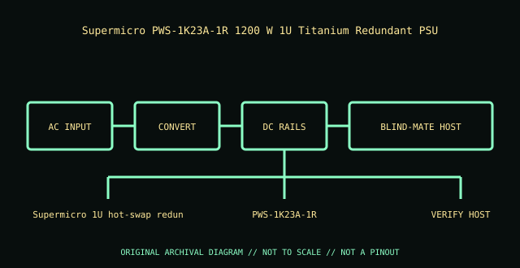

[ POWER CONVERSION // IDENTIFIED MODEL ]
Supermicro PWS-1K23A-1R 1200 W 1U Titanium Redundant PSU
Exact module identity: Supermicro PWS-1K23A-1R. This record applies only to this manufacturer option/PID; nominal wattage or a similar shell does not prove cross-model compatibility.

HIGH-VOLTAGE WARNING: Disconnect mains before external inspection. Never open a PSU. Internal capacitors may retain lethal charge after unplugging. Do not probe or repair its interior; use qualified service or replace the unit.
Model-specific ratings & fit
| Manufacturer identity / exact module | Supermicro PWS-1K23A-1R — Supermicro PWS-1K23A-1R 1200 W 1U Titanium Redundant PSU |
|---|---|
| Rated output / rail information | 1200 W at 200–240 V AC; 1000 W at 100–127 V AC; +12 VDC main output (up to 100 A at 1200 W; 83 A at 1000 W, per model rating). |
| AC input | 100–127 V AC and 200–240 V AC, 50/60 Hz; rated output depends on input line. |
| Efficiency | 80 PLUS Titanium; greater than 96% at 230 V AC (manufacturer specification) |
| Form factor / mounting | Supermicro 1U hot-swap redundant PSU module. |
| Connectors / backplane | IEC AC inlet; Supermicro proprietary blind-mate connector to a validated power distribution board/backplane. |
| System compatibility | Supermicro PSU matrix-approved systems/chassis only; an example listed chassis is SC216BE1C4-R1K23LPB. Confirm the complete model/revision and PDB before purchase or installation. |
| Redundancy / cooling | Hot-swappable redundant module; safe removal requires system-supported redundancy and the chassis service procedure. Internal fan airflow is designed for compatible chassis only. |
| Revision distinctions | PWS-1K23A-1R is the 1R Titanium module, distinct from the catalogued PWS-1K23A-SQ. The suffix and acoustics/fit are not interchangeable. |
Compatibility & safe installation
- Confirm full manufacturer part/PID, revision and label against the host’s exact system QuickSpecs, service manual and power-supply matrix.
- Check input voltage, rail limits, connector/backplane keying, bay dimensions, supported efficiency class and cooling direction before installation.
- Hot-plug is conditional: verify healthy remaining supply capacity, supported redundancy state and the host service procedure before removing a live module.
- Do not mix modules or use modular leads across models unless the system manufacturer explicitly approves that combination.
- Never open or probe a PSU. Retire damaged, wet, burnt, corroded, modified or unidentified units.
Revision & archival notes
PWS-1K23A-1R is the 1R Titanium module, distinct from the catalogued PWS-1K23A-SQ. The suffix and acoustics/fit are not interchangeable.
Archive a clear nameplate photograph, complete option/FRU number, hardware revision, AC inlet and connector labels, host model, and source-document revision. Distinguish manufacturer ratings from derived values.
Manufacturer references
- Supermicro PWS-1K23A-1R quick specificationModel ratings, line derating, efficiency and 1U module identity.
- Supermicro Power Supply MatrixManufacturer compatibility matrix; validate exact system and revision.
- Supermicro SC216BE1C4-R1K23LPB chassis specificationsExample host chassis and PSU compatibility reference.
Manufacturer nameplate and applicable system manual take precedence over this summary.